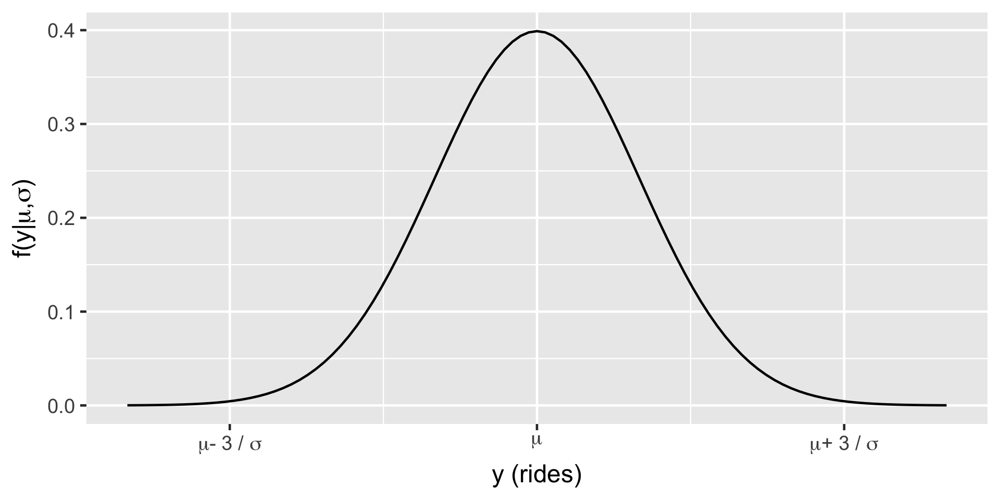
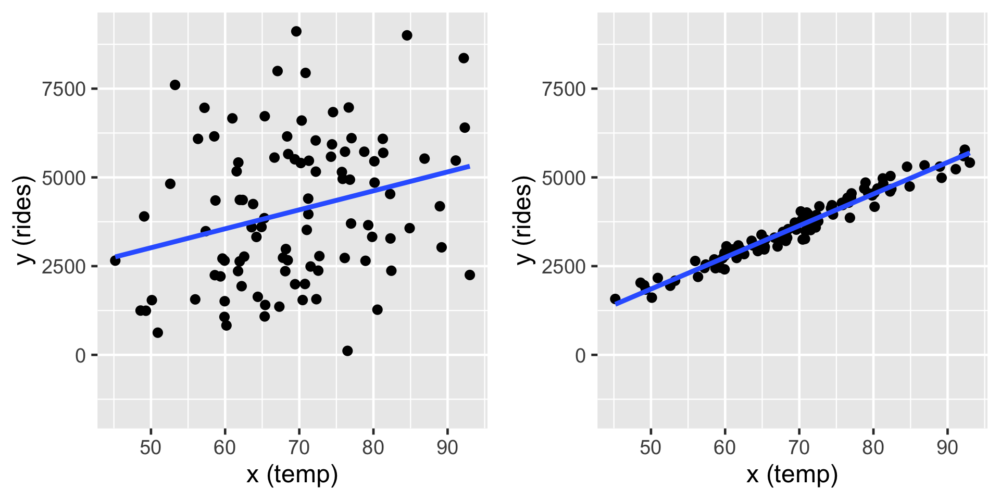

Rows: 500
Columns: 13
$ date <date> 2011-01-01, 2011-01-03, 2011-01-04, 2011-01-05, 2011-01-0…
$ season <fct> winter, winter, winter, winter, winter, winter, winter, wi…
$ year <int> 2011, 2011, 2011, 2011, 2011, 2011, 2011, 2011, 2011, 2011…
$ month <fct> Jan, Jan, Jan, Jan, Jan, Jan, Jan, Jan, Jan, Jan, Jan, Jan…
$ day_of_week <fct> Sat, Mon, Tue, Wed, Fri, Sat, Mon, Tue, Wed, Thu, Fri, Sat…
$ weekend <lgl> TRUE, FALSE, FALSE, FALSE, FALSE, TRUE, FALSE, FALSE, FALS…
$ holiday <fct> no, no, no, no, no, no, no, no, no, no, no, no, no, yes, n…
$ temp_actual <dbl> 57.39952, 46.49166, 46.76000, 48.74943, 46.50332, 44.17700…
$ temp_feel <dbl> 64.72625, 49.04645, 51.09098, 52.63430, 50.79551, 46.60286…
$ humidity <dbl> 80.5833, 43.7273, 59.0435, 43.6957, 49.8696, 53.5833, 48.2…
$ windspeed <dbl> 10.749882, 16.636703, 10.739832, 12.522300, 11.304642, 17.…
$ weather_cat <fct> categ2, categ1, categ1, categ1, categ2, categ2, categ1, ca…
$ rides <int> 654, 1229, 1454, 1518, 1362, 891, 1280, 1220, 1137, 1368, …Simple Normal Regression
Dr. Mine Dogucu
The notes for this lecture are derived from Chapter 9 of the Bayes Rules! book
Rides

\(Y_i | \mu, \sigma \stackrel{ind}{\sim} N(\mu, \sigma^2)\)
\(\mu \sim N(\theta, \tau^2)\) \(\sigma \sim \text{ some prior model.}\)
Regression Model
\(Y_i\) the number of rides
\(X_i\) temperature (in Fahrenheit) on day \(i\).
\(\mu_i = \beta_0 + \beta_1X_i\)
\(\beta_0:\) the typical ridership on days in which the temperature was 0 degrees ( \(X_i\)=0). It is not interpretable in this case.
\(\beta_1:\) the typical change in ridership for every one unit increase in temperature.
Normal likelihood model
\[\begin{split} Y_i | \beta_0, \beta_1, \sigma & \stackrel{ind}{\sim} N\left(\mu_i, \sigma^2\right) \;\; \text{ with } \;\; \mu_i = \beta_0 + \beta_1X_i \; .\\ \end{split}\] These simulations show two cases where \(\beta_0 = -2000\) and slope \(\beta_1 = 100\). On the left \(\sigma = 2000\) and on the right \(\sigma = 200\) (right). In both cases, the model line is defined by \(\beta_0 + \beta_1 x = -2000 + 100 x\).
Prior Models
\(\text{likelihood model:} \; \; \; Y_i | \beta_0, \beta_1, \sigma \;\;\;\stackrel{ind}{\sim} N\left(\mu_i, \sigma^2\right)\text{ with } \mu_i = \beta_0 + \beta_1X_i\)
\(\text{prior models:}\)
\(\beta_0\sim N(m_0, s_0^2 )\)
\(\beta_1\sim N(m_1, s_1^2 )\)
\(\sigma \sim \text{Exp}(l)\)
Recall:
\(\text{Exp}(l) = \text{Gamma}(1, l)\)
\[\begin{split} Y_i | \beta_0, \beta_1, \sigma & \stackrel{ind}{\sim} N\left(\mu_i, \sigma^2\right) \;\; \text{ with } \;\; \mu_i = \beta_0 + \beta_1X_i \\ \beta_{0c} & \sim N\left(5000, 1000^2 \right) \\ \beta_1 & \sim N\left(100, 40^2 \right) \\ \sigma & \sim \text{Exp}(0.0008) .\\ \end{split}\]
Simulation via rstanarm
The refresh = FALSE prevents printing out your chains and iterations, especially useful in R Markdown.
(Intercept) temp_feel sigma
1.03285 1.03505 0.96585 (Intercept) temp_feel sigma
0.9998873 0.9999032 0.9999642 The effective sample size ratios are slightly above 1 and the R-hat values are very close to 1, indicating that the chains are stable, mixing quickly, and behaving much like an independent sample.
# A tibble: 4 × 5
term estimate std.error conf.low conf.high
<chr> <dbl> <dbl> <dbl> <dbl>
1 (Intercept) -2195. 354. -2646. -1736.
2 temp_feel 82.2 5.07 75.7 88.7
3 sigma 1282. 40.6 1232. 1336.
4 mean_PPD 3487. 81.5 3382. 3593. Referring to the tidy() summary, the posterior median relationship is
\[\begin{equation} -2195.31 + 82.22 X \end{equation}\]
Posterior Prediction
Suppose a weather report indicates that tomorrow will be a 75-degree day in D.C. What’s your posterior guess of the number of riders that Capital Bikeshare should anticipate?
Your natural first crack at this question might be to plug the 75-degree temperature into the posterior median model. Thus, we expect that there will be 3971 riders tomorrow:
\[-2195.31 + 82.22\times75 = 3971.19\]
Not quiet.
Recall that this singular prediction ignores two potential sources of variability:
- Sampling variability in the data
The observed ridership outcomes, \(Y\), typically deviate from the model line. That is, we don’t expect every 75-degree day to have the same exact number of rides.
- Posterior variability in parameters \((\beta_0, \beta_1, \sigma)\)
The posterior median model is merely the center in a range of plausible model lines \(\beta_0 + \beta_1 X\). We should consider this entire range as well as that in \(\sigma\), the degree to which observations might deviate from the model lines.
The posterior predictive model of a new data point \(Y_{\text{new}}\) accounts for both sources of variability.
We have20,000 sets of parameters in the Markov chain \(\left(\beta_0^{(i)},\beta_1^{(i)},\sigma^{(i)}\right)\). We can then approximate the posterior predictive model for \(Y_{\text{new}}\) at \(X = 75\) by simulating a ridership prediction from the Normal model evaluated each parameter set:
\[Y_{\text{new}}^{(i)} | \beta_0, \beta_1, \sigma \; \sim \; N\left(\mu^{(i)}, \left(\sigma^{(i)}\right)^2\right) \;\; \text{ with } \;\; \mu^{(i)} = \beta_0^{(i)} + \beta_1^{(i)} \cdot 75.\]
\[\left[ \begin{array}{lll} \beta_0^{(1)} & \beta_1^{(1)} & \sigma^{(1)} \\ \beta_0^{(2)} & \beta_1^{(2)} & \sigma^{(2)} \\ \vdots & \vdots & \vdots \\ \beta_0^{(20000)} & \beta_1^{(20000)} & \sigma^{(20000)} \\ \end{array} \right] \;\; \longrightarrow \;\; \left[ \begin{array}{l} Y_{\text{new}}^{(1)} \\ Y_{\text{new}}^{(2)} \\ \vdots \\ Y_{\text{new}}^{(20000)} \\ \end{array} \right]\]
Posterior Prediction with rstanarm
Using the default priors in rstanarm
By setting autoscale = TRUE, stan_glm() adjusts or scales our default priors to optimize the study of parameters which have different scales.
Priors for model 'bike_model_default'
------
Intercept (after predictors centered)
Specified prior:
~ normal(location = 5000, scale = 2.5)
Adjusted prior:
~ normal(location = 5000, scale = 3937)
Coefficients
Specified prior:
~ normal(location = 0, scale = 2.5)
Adjusted prior:
~ normal(location = 0, scale = 351)
Auxiliary (sigma)
Specified prior:
~ exponential(rate = 1)
Adjusted prior:
~ exponential(rate = 0.00064)
------
See help('prior_summary.stanreg') for more detailsDefault vs non-default priors
Con: weakly informative priors are tuned with information from the data (through a fairly minor consideration of scale).
Pro: Unless we have strong prior information, utilizing the defaults will typically lead to more stable simulation results than if we tried tuning our own vague priors.
Pro: The defaults can help us get up and running with Bayesian modeling. In future lectures, we’ll often utilize the defaults in order to focus on the new modeling concepts.